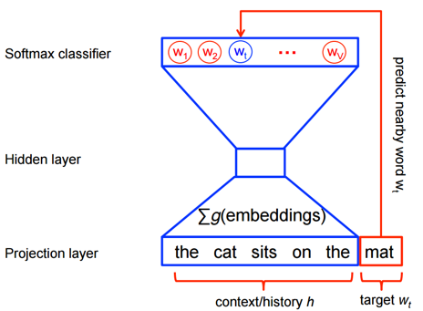
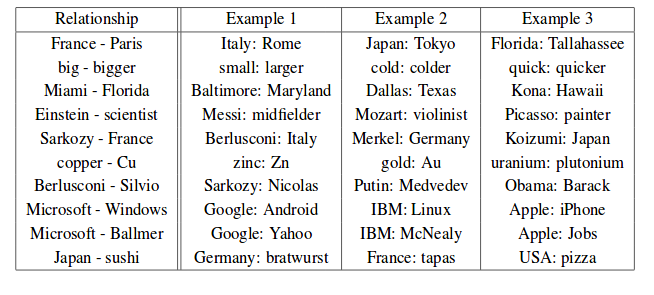

understanding Word2Vec
As powerful as computers have become they are still relatively "stupid". In fact, computing power normally only tells you how quickly they can perform simple calculations like adding and subtracting. What computers are really bad at is more general abstract questions. That's stuff like "can you notice pedestrians in a photo" or "can you realise how the words 'king' and 'queen' are related"?
What computers really get is vectors, they love them. By considering vectors as an array (list) of numbers, computers are able to still perform super simple and quick calculations. In addition, vectors already have some hardcore fans, who got obsessed with them through this niche subject called "Geometry". These guys have come from as far as India and Greece and considered lots of ways to tell how similar vectors are (mathematicians would call these metrics).
We skip the work they've done because you probably learnt it in your Maths class. It's the intuitive stuff such as "the distance between two points" and "the angle between two vectors" - different ways to measure how similar two vectors are. Depending on our choice of the two vectors, we could make these two measurements very different and, in that process, highlight different relationships between whatever those vectors represent.
So, the approach that people considered is using vectors to represent abstract concepts, such as "pedestrians in a photo" or words such as "queen". That way we can still compute things quickly, but the geometric properties between vectors can encode information. If the mitochondrion was the powerhouse of the cell, then the vector is the powerhouse of representation learning.
Below we discuss one of my favourite examples of representation learning – Word2Vec.
Word2Vec
Within Natural Language Processing, focus has been on producing robust representations of words. Telling a computer "Tom sat on the chair" and then asking, "Where is Tom?" is relatively difficult for a computer, as it requires an understanding of Tom as an object/noun and the relationship that the verb "sat" implies.
Computers need some way to represent a word. In particular, Neural Networks (which do most of the work) need continuous representations. Think of continuous as meaning "not in chunks", if something is continuous then there are no gaps between any two points (e.g in the flow of water). On the otherhand words are discrete, they literally are separate tokens, and between things like "cat" and "dog" there is no intermediate concept.
Linguists had a theory dubbed the "distributional hypothesis" which suggested that words are defined by the company that they keep. If I remove a _____ from a sentence, you can guess what it is (in this case 'word'). A group of computer scientists, decided to train neural networks to play this game, and at the same time allowed the network to modify the vector representation of the words in order to succeed.
So, the neural network is fed a sentence from a text such as "the cat sat on the" and told the answer should be "mat". The network first changes each word into a one-hot vector. This type of vector is a form of index, and is filled with N zeros, where N is the number of words in the entire vocabulary of the text. The zero which corresponds to the desired word is flipped to a one.
The biggest hold back is that for a large text, these vectors are pretty huge, and we'd like our representations to be a bit more informationally dense, so you can use fewer numbers to express more information about the entity.
So, the first layer of the neural network takes the large one-hot vectors of a phrase and adds them together, creating an N-hot vector (which has multiple ones in it). This is then fed into the first section of the neural network which outputs a smaller vector representation (the hidden state). We call this the word embedding (and it's the important part).
The new single vector representation – the hidden state, is then taken by the rest of the network to predict what the next word should be. The neural network tells us its belief by outputting a vector which contains, in each dimension, the probability that it is the corresponding word (we call this a Softmax classifier).
The network believes the next word is 10% likely to be "The", 30% likely to "Black" and 60% likely to be "Cat".
We train the model, so it's allowed to change the word embedding layer to try improving it's score. In the example above we take the hidden state representation to be the corresponding vector for "mat". This is useful because the vector representation of "mat" depends purely on the words around it and the model must train to fit all other phrases which also predict "mat".
When we look at these vectors (we can represent them as scatter plots in 2 and 3 dimensions), we see rich relationships between them. We find that certain directions between vectors represent relationships between words. For example, gendered nouns are always the same distance from each other (king/queen, man/woman, mr/mrs) and that verb tenses are in the same direction (walking/walked, swimming/swam).
Finally, as vectors are well studied, we can do interesting things with them like addition. This means that those relationships can be quantified as follows:
Rome + France — Paris = Italy
king — man + woman = queen
These dense representations encode a lot of information. So, we try use these word representations for different tasks. We keep a dictionary of the word embedding which knows which vector relates to which word. Then for more difficult tasks (like translation), the neural networks can exploit these geometric relationships to complete its task quicker. For example, a network no longer needs to learn explicitly how to handle "queen"— it just needs to learn "king", "man" and "woman", so one less input to stress about!
Limitations
However, word2vec isn't without limitations. The largest problem comes from how we calculate the phrases in the first place, which is done by addition. As addition is commutative, the order doesn't matter. The phrase "Alice sat on the horse" and "the horse sat on Alice" have the same representation in the hidden state! Word ordering is a key component of syntax and language understanding. Secondly, it's not clear in a text when a phrase stops, should we consider only "The cat sat on the table" or should we consider the phrase "The cat sat on the table whilst the dog growled".
I'll discuss in the follow up blog how we can tackle these issues.
This blog is part of a larger series which is also posted for Spherical Defence Labs, you can find out more about them guys here.